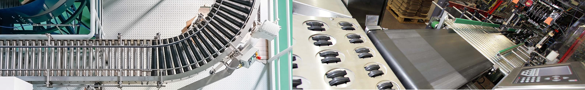

Leading in industrial weighing solutions since 1715
Trailblazers in weighing innovation & excellence
Distilleries
If you are in the distilleries industry..
What you require? You will likely require a batch weighing system for multiple coups approx 30kg.
What indicator would be appropriate? JWS 1280 Series Indicator would be an ideal control system allowing profibus and ethernet connections.
What software would be appropriate? JWS Grain Weigher software will allow you to set coup size per mash with an eternal total to allow you to keep track of production.
Benefits of the solution? This combo will provide the accuracy required across differing batch sizes, multiple ways to connect to your own internal control system and speeds unmatched worldwide.
Quarries
If you are in the quarrying industry..
What you require? Reliable multi site weighbridge management system.
What indicator would be appropriate? JWS 825 Series Indicator would allow the export of data into virtually any accounting system via download or ethernet.
What software would be appropriate? JWS Gestruck Weighbridge Management software would be ideal whether you have a two way weighbridge system or multiple sites nationally.
Benefits of the solution? Customize what data you want recorded from ANPR, Driver Details or Load. Whatever you can think of we can do.
Waste & Recycling
If you are in the waste & recycling industry..
What you require? Traffic Light weighbridge system for high volume of vehicles
What indicator would be appropriate? JWS 825 Series Indicator would allow logging of 3rd party trucks and hundreds of load combinations.
What software would be appropriate? JWS Gestruck Traffic Management software allow you to control the flow of traffic on multiple sites and redirect to other linked sites when at capacity via vehicle tracking and key fobs.
Benefits of the solution? Total control of site traffic, 3rd party vehicle tracking and flow management means limited downtime.
Transport
If you are in the transport industry..
What you require? Fleet management weighbridge system linking distribution.
What indicator would be appropriate? JWS 825 Series Indicator would allow data transfers to head office from distribution sites, vehicle tracking and driver fobs.
What software would be appropriate? JWS 825 Fleet Management software will link to most stock management systems allowing you to plan your routes based on FIFO or LIFO.
Benefits of the solution? With integration with your stock system, routes can be sent to drivers allowing access to weighbridge locations via fobs.
Manufacturing
If you are in the manufacturing industry..
What you require? Packaging check weighing system that links with labelling and quality control
What indicator would be appropriate? JWS 1280 Series Indicator can link to other control systems via ethernet or profibus allowing seamless integration on your production lines.
What software would be appropriate? JWS Check Weighing software would be ideal allowing the best line speeds in the industry and wide compatibility.
Benefits of the solution? Link with other 3rd party contractors systems to integrate check weighing, labelling and packaging whilst maintaining pinpoint accuracy.

All of your weighing processes can be controlled and synchronized with the JWS Indicator and Software Solution